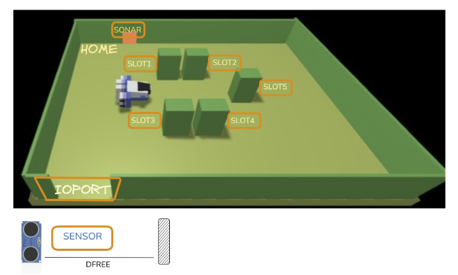

Goal Sprint3: Progettare e realizzare il sottosistema telemetrico sonar e l'attuatore led, integrando il firmware su microcontrollore o nodo dedicato. Completare la gestione delle anomalie telemetriche con transizione nello stato Out of service a display e gestire la segnalazione luminosa nelle diverse fasi operative.
A Maritime Cargo shipping company (from now on, simply company) intends to automate the operations of load of containers in the ship’s cargo hold (or simply hold). To this end, the company plans to employ a Differential Drive Robot (from now, called cargorobot).
The hold is a rectangular, flat area with an Input/Output port (IOPort). The area provides 4 slots to store the
containers and a slot named slot5.

In the picture above:
D < DFREE/2, during a reasonable time (e.g. 3 secs).
The company asks us to build service named cargoservice that should work as follows.
The cargoservice is able to receive a request to load a container sent by some customer by using the pushbutton of the IOPort.
retrylater, if the IOPort is currently occupied by a container or if the system is Out of service
slots1-4 are already occupied.
When the request to load is accepted, the customer must move the container in the sensor area within prefixed amount of time (e.g. 30 secs), otherwise the systems becomes disengaged. Then, the cargoservice uses the cargorobot to move the container from the IOPort to the slot5 (for marking the container) and then to the reserved slot.
The service must also show on the display on the IOPort:
D > DFREE for at least 3 secs (perhaps a
failure of the sonar).
L'analisi dei requisiti è stata svolta nello Sprint0.
Il dispositivo fisico preposto al campionamento dello spazio antistante l'IOPort è un microcontrollore Raspberry PicoW dotato di un sensore a ultrasuoni HC-SR04. Il PicoW esegue un runtime leggero MicroPython e dispone di risorse computazionali e stack di rete limitati: non è in grado di eseguire l'infrastruttura JVM né di istanziare il runtime degli attori QAk. Non è concepibile accoppiare direttamente la logica centrale di cargoservice con le letture grezze del microcontrollore:
Il microcontrollore PicoW deve comunicare la distanza $D$ all'attore sonar e ricevere dal sistema il comando di attivazione del LED. Analizziamo le alternative per questo canale eterogeneo:
TABELLA PER DESY
Scelto MQTT come canale di trasporto, si presentano due modalità per far interagire il broker con l'attore sonar:
mqttBroker "IP_BROKER" port 1883 eventTopic "cargoservice/sonar/distance"
In questo modo, qualsiasi evento pubblicato su tale topic nel formato standard msg(...) viene intercettato direttamente dal runtime QAk e consegnato come Event sonarreading : sonarreading(D) a chiunque possieda una transizione whenEvent sonarreading.
I requisiti impongono il rispetto di due soglie geometrico-temporali:
Il committente specifica che l'anomalia telemetrica ($D > \text{DFREE}$ persistente per più di 3 secondi) pone l'intero sistema in stato Out of service. Sorge una questione critica su come debba comportarsi cargorobot qualora tale guasto si manifesti mentre il robot è in movimento lungo una delle quattro tratte previste (verso IOPort, verso slot5, verso lo slot riservato, verso HOME):
L'introduzione del Raspberry PicoW rappresenta l'aggiunta di un nodo hardware fisico separato nella rete. Ci si domanda se tale separazione imponga la creazione di un ulteriore contesto QAk (ctxsonar) isolato.
Il LED deve riflettere fedelmente le transizioni operative stabilite: spento in idle, lampeggiante in engaged e durante la movimentazione, rosso fisso o spento in Out of service.
A completamento dell'analisi, viene formalizzato il modello logico che include il broker MQTT, i nuovi eventi di lettura telemetrica, i dispatch di notifica guasto/ripristino e il pilotaggio del LED:
System sprint3
// Broker MQTT per interfacciamento con Raspberry PicoW
mqttBroker "127.0.0.1" port 1883 eventTopic "cargoservice/sonar/distance"
// --- Messaggi Telemetrici e Segnalazioni Sonar/LED ---
Event sonarreading : sonarreading(D) // Lettura istantanea grezza da PicoW
Dispatch sonarcontainer : sonarcontainer(DISTANCE) // Soglia D < DFREE/2 confermata per >= 3s
Dispatch sonarfault : sonarfault(CAUSE) // Soglia D > DFREE confermata per >= 3s
Dispatch sonarrestored : sonarrestored(NONE) // Rientro nei parametri normali
Dispatch blinkLed : blinkLed(FLAG) // Comando controllo LED verso PicoW
Event alarm : alarm(X) // Arresto di emergenza per RobotSmart26
// --- Messaggi di Trasporto e Servizio (dagli Sprint 1 e 2) ---
Request loadrequest : loadrequest(IOPORT_STATE)
Reply retrylater : retrylater(CAUSE, HOLD_STATE) for loadrequest
Reply reject : reject(HOLD_STATE) for loadrequest
Reply engaged : engaged(RESERVED_SLOT, HOLD_STATE) for loadrequest
Dispatch updateHoldDisplay : updateHoldDisplay(STATE, HOLD_STATE, MSG)
Dispatch updateWorkingState : updateWorkingState(STATE)
Dispatch button_pushed : button_pushed(X)
Request transportContainer : transportContainer(SLOT, TARGETX, TARGETY)
Reply transportDone : transportDone(SLOT) for transportContainer
Reply transportFailed : transportFailed(CAUSE) for transportContainer
Request moverobot : moverobot(TARGETX, TARGETY, STEPTIME)
Reply moverobotdone : moverobotok(ARG) for moverobot
Reply moverobotfailed : moverobotfailed(PLANDONE, PLANTODO) for moverobot
// --- Contesti Architetturali ---
Context ctxcargoservice ip [host="localhost" port=8120]
Context ctxrobotsmart ip [host="127.0.0.1" port=8020]
ExternalQActor robotsmart context ctxrobotsmart
I test plan per lo Sprint 3 si concentrano sulla validazione formale del nuovo sottosistema telemetrico, del filtraggio temporale delle letture e della gestione della sicurezza e dei guasti. Per garantire una verifica rigorosa e ripetibile, i test sono strutturati su due livelli operativi:
In conformità con la metodologia del corso e gli incrementi dei precedenti sprint, il prototipo dello Sprint 3 formalizza l'integrazione telemetrica nel modello eseguibile sprint3.qak. Il sistema incorpora l'attore sonar nel contesto applicativo, introduce il broker MQTT per dialogare con il microcontrollore e arricchisce le macchine a stati di cargoservice e cargorobot con la gestione delle finestre temporali e della sicurezza.
Il broker MQTT viene dichiarato direttamente a livello di sistema. L'infrastruttura QAk si sottoscrive automaticamente al topic telemetrico traducendo ogni payload in arrivo in un evento sonarreading:
System sprint3
// Dichiarazione nativa del broker MQTT per la ricezione telemetrica
mqttBroker "127.0.0.1" port 1883 eventTopic "cargoservice/sonar/distance"
// --- Eventi e Dispatch per Sonar e LED ---
Event sonarreading : sonarreading(D) // Lettura di distanza grezza da PicoW
Dispatch sonarcontainer : sonarcontainer(DISTANCE) // Presenza container confermata (D < DFREE/2 per >= 3s)
Dispatch sonarfault : sonarfault(CAUSE) // Guasto sospetto confermato (D > DFREE per >= 3s)
Dispatch sonarrestored : sonarrestored(NONE) // Ripristino condizioni normali
Dispatch blinkLed : blinkLed(FLAG) // Comando controllo LED verso PicoW via MQTT
Event alarm : alarm(X) // Arresto immediato inviato a RobotSmart26
// --- Protocollo applicativo consolidato dagli Sprint precedenti ---
Request loadrequest : loadrequest(IOPORT_STATE)
Reply retrylater : retrylater(CAUSE, HOLD_STATE) for loadrequest
Reply reject : reject(HOLD_STATE) for loadrequest
Reply engaged : engaged(RESERVED_SLOT, HOLD_STATE) for loadrequest
Dispatch updateHoldDisplay : updateHoldDisplay(STATE, HOLD_STATE, MSG)
Dispatch updateWorkingState : updateWorkingState(STATE)
Dispatch button_pushed : button_pushed(X)
Request transportContainer : transportContainer(SLOT, TARGETX, TARGETY)
Reply transportDone : transportDone(SLOT) for transportContainer
Reply transportFailed : transportFailed(CAUSE) for transportContainer
Request moverobot : moverobot(TARGETX, TARGETY, STEPTIME)
Reply moverobotdone : moverobotok(ARG) for moverobot
Reply moverobotfailed : moverobotfailed(PLANDONE, PLANTODO) for moverobot
// --- Contesti architetturali ---
Context ctxcargoservice ip [host="localhost" port=8120]
Context ctxrobotsmart ip [host="127.0.0.1" port=8020]
ExternalQActor robotsmart context ctxrobotsmart
L'attore sonar gestisce il filtraggio delle soglie telemetriche mantenendo i timestamp di sistema. Trasmette gli aggiornamenti di stato solo se le letture persistono oltre la finestra di convalida di 3000 ms:
QActor sonar context ctxcargoservice {
[#
val DFREE = 30.0
var Dist = 0.0
var Occupied = false
var Faulted = false
var T0Container = 0L
var T0Fault = 0L
val WINDOW = 3000L
#]
State idle initial {
println("$name | pronto in ascolto degli eventi sonar via MQTT") color blue
}
Transition t0
whenEvent sonarreading -> onReading
whenMsg blinkLed -> onBlink
State onReading {
onMsg(sonarreading : sonarreading(D)) {
[#
Dist = payloadArg(0).toDouble()
val now = System.currentTimeMillis()
#]
// --- Logica Finestra Convalida Container (D < DFREE/2 per >= 3s) ---
if [# Dist < (DFREE / 2.0) #] {
[# if (T0Container == 0L) T0Container = now #]
if [# !Occupied && (now - T0Container) >= WINDOW #] {
[# Occupied = true #]
println("$name | Container confermato a D=$Dist cm per >= 3s") color blue
forward cargoservice -m sonarcontainer : sonarcontainer($Dist)
}
} else {
[# T0Container = 0L #]
if [# Occupied && Dist >= (DFREE / 2.0) #] {
[# Occupied = false #]
println("$name | Container rimosso dall'area sensore") color blue
}
}
// --- Logica Finestra Convalida Guasto Sonar (D > DFREE per >= 3s) ---
if [# Dist > DFREE #] {
[# if (T0Fault == 0L) T0Fault = now #]
if [# !Faulted && (now - T0Fault) >= WINDOW #] {
[# Faulted = true #]
println("$name | GUASTO RILEVATO: D=$Dist cm per >= 3s") color red
forward cargoservice -m sonarfault : sonarfault(sonarOutOfRange)
forward cargorobot -m sonarfault : sonarfault(sonarOutOfRange)
}
} else {
[# T0Fault = 0L #]
if [# Faulted #] {
[# Faulted = false #]
println("$name | Sonar ripristinato entro i parametri normali") color blue
forward cargoservice -m sonarrestored : sonarrestored(NONE)
forward cargorobot -m sonarrestored : sonarrestored(NONE)
}
}
}
}
Goto idle
State onBlink {
onMsg(blinkLed : blinkLed(FLAG)) {
[#
val flag = payloadArg(0)
val ledDispatch = unibo.basicomm23.utils.CommUtils.buildDispatch(
name, "blinkLed", "blinkLed($flag)", "picow"
)
mqtt.publish("cargoservice/sonar/led", ledDispatch.toString())
#]
println("$name | Comando LED ($flag) inoltrato a PicoW via MQTT") color blue
}
}
Goto idle
}
Nello Sprint 3, cargoservice sincronizza l'avvio della missione alla ricezione di sonarcontainer e governa lo stato protetto Out of service:
State engaged {
println("$name | ENGAGED: attesa rilevamento container dal sonar (max 30s)") color magenta
forward sonar -m blinkLed : blinkLed(true)
}
Transition tEng
whenTime 30000 -> disengagedTimeout
whenMsg sonarcontainer -> startTransport
whenMsg sonarfault -> engagedOutOfService
whenRequest loadrequest -> rejectBusyRequest
State startTransport {
println("$name | Container rilevato fisicamente: incarico cargorobot") color magenta
[#
val targetX = h.getSlotX(CurrentReservedSlot)
val targetY = h.getSlotY(CurrentReservedSlot)
#]
request cargorobot -m transportContainer : transportContainer($CurrentReservedSlot, $targetX, $targetY)
}
Transition tTrans
whenReply transportDone -> handleTransportSuccess
whenReply transportFailed -> handleTransportFailure
whenMsg sonarfault -> transportOutOfService
whenMsg sonarrestored -> transportRestored
whenRequest loadrequest -> rejectBusyRequest
State engagedOutOfService {
println("$name | GUASTO durante fase engaged: rilascio slot") color red
[#
if (CurrentReservedSlot != -1) {
h.releaseSlot(CurrentReservedSlot)
CurrentReservedSlot = -1
}
val holdStr = h.getHoldStateString()
#]
forward sonar -m blinkLed : blinkLed(false)
forward ioport -m updateWorkingState : updateWorkingState("OUT_OF_SERVICE")
forward ioport -m updateHoldDisplay : updateHoldDisplay("OUT_OF_SERVICE", $holdStr, "Guasto sonar")
}
Goto outOfServiceWait
State outOfServiceWait {
println("$name | Sistema BLOCCATO in Out of service") color red
}
Transition tOos
whenMsg sonarrestored -> onServiceRestored
whenRequest loadrequest -> rejectOutOfService
State onServiceRestored {
println("$name | Sonar ripristinato: ritorno in IDLE") color magenta
[# val holdStr = h.getHoldStateString() #]
forward ioport -m updateWorkingState : updateWorkingState("WORKING")
forward ioport -m updateHoldDisplay : updateHoldDisplay("IDLE", $holdStr, "Service working")
}
Goto idle
Per gestire il guasto telemetrico durante la movimentazione, cargorobot memorizza la tratta attiva (Leg) e le coordinate correnti di destinazione. Se sopraggiunge sonarfault, blocca RobotSmart26 con alarm e attende sonarrestored per riprendere la rotta interrotta:
QActor cargorobot context ctxcargoservice {
[#
var TargetSlot = -1
var TargetX = -1
var TargetY = -1
val StepTime = 345
var PendingTX = -1
var PendingTY = -1
var Leg = "" // "toIOPort" | "toSlot5" | "toReserved" | "toHome"
#]
withobj hold using "cargoservice.Hold()"
State idle initial {
println("$name | pronto in IDLE") color blue
}
Transition t0 whenRequest transportContainer -> prepareMoveToIOPort
State prepareMoveToIOPort {
onMsg(transportContainer : transportContainer(SLOT, TARGETX, TARGETY)) {
[#
TargetSlot = payloadArg(0).toInt()
TargetX = payloadArg(1).toInt()
TargetY = payloadArg(2).toInt()
val pos = hold.getIOPortPosition()
PendingTX = pos.x
PendingTY = pos.y
Leg = "toIOPort"
#]
request robotsmart -m moverobot : moverobot($PendingTX, $PendingTY, $StepTime)
}
}
Transition t1
whenReply moverobotdone -> atIOPort
whenReply moverobotfailed -> handleMoveFailed
whenMsg sonarfault -> onSonarFaultDuringMove
State atIOPort {
println("$name | A IOPort, prelievo carico") color blue
}
Transition t2 whenTime 1500 -> prepareMoveToSlot5
State prepareMoveToSlot5 {
[#
val pos = hold.getSlot5Position()
PendingTX = pos.x
PendingTY = pos.y
Leg = "toSlot5"
#]
request robotsmart -m moverobot : moverobot($PendingTX, $PendingTY, $StepTime)
}
Transition t3
whenReply moverobotdone -> atSlot5
whenReply moverobotfailed -> handleMoveFailed
whenMsg sonarfault -> onSonarFaultDuringMove
State atSlot5 {
println("$name | A Slot5: marcatura barcode...") color blue
}
Transition t4 whenTime 3000 -> prepareMoveToReserved
State prepareMoveToReserved {
[#
PendingTX = TargetX
PendingTY = TargetY
Leg = "toReserved"
#]
request robotsmart -m moverobot : moverobot($PendingTX, $PendingTY, $StepTime)
}
Transition t5
whenReply moverobotdone -> atReservedSlot
whenReply moverobotfailed -> handleMoveFailed
whenMsg sonarfault -> onSonarFaultDuringMove
State atReservedSlot {
println("$name | Container depositato nello slot $TargetSlot") color blue
}
Transition t6 whenTime 1500 -> prepareReturnHome
State prepareReturnHome {
[#
val pos = hold.getHomePosition()
PendingTX = pos.x
PendingTY = pos.y
Leg = "toHome"
#]
request robotsmart -m moverobot : moverobot($PendingTX, $PendingTY, $StepTime)
}
Transition t7
whenReply moverobotdone -> transportCompleted
whenReply moverobotfailed -> handleMoveFailed
whenMsg sonarfault -> onSonarFaultDuringMove
// --- Gestione Guasto e Sospensione Tratta ---
State onSonarFaultDuringMove {
println("$name | Guasto sonar durante tratta $Leg: ARRESTO ROBOT!") color red
emit alarm : alarm(sonarfault)
}
Transition tHalt whenMsg sonarrestored -> resumeNavigation
State resumeNavigation {
println("$name | Sonar ripristinato: ripresa tratta $Leg verso ($PendingTX, $PendingTY)") color yellow
request robotsmart -m moverobot : moverobot($PendingTX, $PendingTY, $StepTime)
}
Transition tResume
whenReply moverobotdone -> evaluateResumedLeg
whenReply moverobotfailed -> handleMoveFailed
State evaluateResumedLeg {
// Rientro nello stato operativo corrispondente alla tratta appena completata
Goto atIOPort if [# Leg == "toIOPort" #] else checkResumedSlot5
}
State checkResumedSlot5 {
Goto atSlot5 if [# Leg == "toSlot5" #] else checkResumedReserved
}
State checkResumedReserved {
Goto atReservedSlot if [# Leg == "toReserved" #] else transportCompleted
}
State transportCompleted {
println("$name | Trasporto concluso regolarmente in HOME") color blue
replyTo transportContainer with transportDone : transportDone($TargetSlot)
[# TargetSlot = -1 #]
}
Goto idle
State handleMoveFailed {
println("$name | Fallimento irrecuperabile del movimento su RobotSmart26") color red
replyTo transportContainer with transportFailed : transportFailed(robotStuck)
[# TargetSlot = -1 #]
}
Goto idle
}
Il firmware rispetta il campionamento a cadenza di circa 1 secondo. Riceve i comandi di controllo del LED senza ricorrere a cicli bloccanti che ostacolerebbero il sensore:
import time
import machine
from umqtt_simple import MQTTClient
import secrets
# Pinout hardware su Raspberry PicoW
TRIG_PIN = 16
ECHO_PIN = 17
LED_PIN = 15
trigger = machine.Pin(TRIG_PIN, machine.Pin.OUT)
echo = machine.Pin(ECHO_PIN, machine.Pin.IN)
led = machine.Pin(LED_PIN, machine.Pin.OUT)
TOPIC_DISTANCE = b"cargoservice/sonar/distance"
TOPIC_LED = b"cargoservice/sonar/led"
blink_active = False
def on_message(topic, msg):
global blink_active
payload = msg.decode()
if "blinkLed(true)" in payload:
blink_active = True
elif "blinkLed(false)" in payload:
blink_active = False
led.value(0)
def measure_distance():
trigger.low()
time.sleep_us(2)
trigger.high()
time.sleep_us(10)
trigger.low()
timeout = 30000
start = time.ticks_us()
while echo.value() == 0:
if time.ticks_diff(time.ticks_us(), start) > timeout:
return None
signal_off = time.ticks_us()
while echo.value() == 1:
if time.ticks_diff(time.ticks_us(), signal_off) > timeout:
return None
signal_on = time.ticks_us()
time_passed = time.ticks_diff(signal_on, signal_off)
# Velocità del suono: 343 m/s -> 0.0343 cm/us
distance = (time_passed * 0.0343) / 2.0
return distance
# Connessione WiFi e Broker MQTT
def setup_mqtt():
client = MQTTClient(
client_id="sonarpico",
server=secrets.MQTT_BROKER_IP,
port=secrets.MQTT_PORT
)
client.set_callback(on_message)
client.connect()
client.subscribe(TOPIC_LED)
return client
client = setup_mqtt()
# Ciclo principale di campionamento (cadenza ~1s)
while True:
try:
client.check_msg()
if blink_active:
led.toggle()
time.sleep(0.3)
d = measure_distance()
if d is not None:
# Formattazione nel formato evento nativo IApplMessage di QAk
event_payload = "msg(sonarreading,event,picow,none,sonarreading(%d),0)" % round(d)
client.publish(TOPIC_DISTANCE, event_payload.encode())
time.sleep(1.0)
except Exception as e:
print("Errore nel loop del sensore:", e)
time.sleep(1.0)
Il deployment dello Sprint 3 concretizza l'architettura distribuita finale del sistema. Il prototipo completo è composto da tre nodi computazionali distinti (il sistema applicativo QAk su JVM, il simulatore WEnv con RobotSmart26, e il microcontrollore fisico Raspberry PicoW), coordinati attraverso il broker MQTT e la rete locale.
TABELLA PER DESY
+-------------------------------------------------------------+ | ctxrobotsmart:8020 | | +-------------------------------------------------------+ | | | RobotSmart26 | | | +-------------------------------------------------------+ | +------------------------------^------------------------------+ | moverobot / alarm (TCP) +-------------------------------------v-------------------------------------+ | ctxcargoservice:8120 | | | | +--------------+ loadrequest +--------------+ | | | ioport | <-------------------> | cargoservice | | | +-------+------+ +-------+------+ | | | | transportContainer | | | ws v | | v +--------------+ | | +--------------+ | cargorobot | | | | IOPortWs | +--------------+ | | | Adapter:7070 | ^ | | +-------+------+ | | | | | sonarfault | | v | sonarrestored | | [ Browser GUI ] +------+-------+ | | | sonar | | | +------^-------+ | +--------------------------------------------------|------------------------+ | cargoservice/sonar/distance| (eventTopic) cargoservice/sonar/led | (publish) v +---------------------------+ | Broker MQTT (1883) | +-------------^-------------+ | | WiFi (MQTT) v +---------------------------+ | Raspberry PicoW | | [ HC-SR04 + LED ] | +---------------------------+